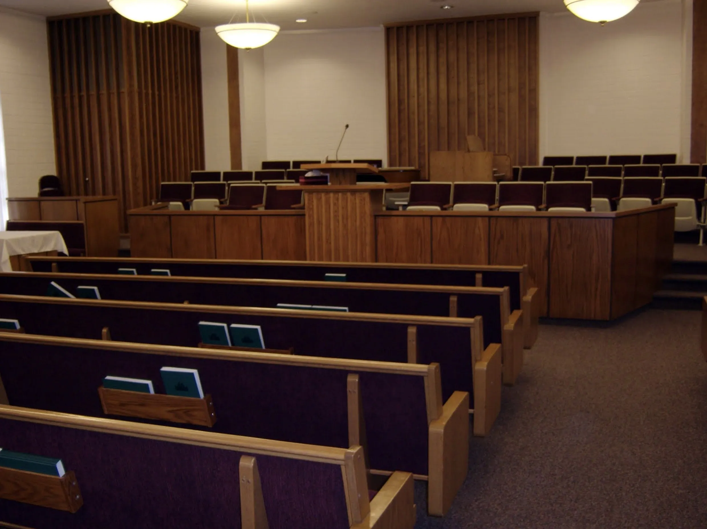

La Iglesia de Jesucristo de los Santos de los Últimos Días

Our district is located in the Argentinian Patagonia. The head is in Caleta Olivia’s Branch, an 80.000 population city in the north of Santa Cruz province.
The district extends to the south and west covering Santa Cruz's north with 4 branches:
- Caleta Olivia
- Pico Truncado
- Las Heras
- Puerto Deseado

La iglesia fue establecida en Santa Cruz en el año 1980. Aprenda más de nosotros...
Ir a página 